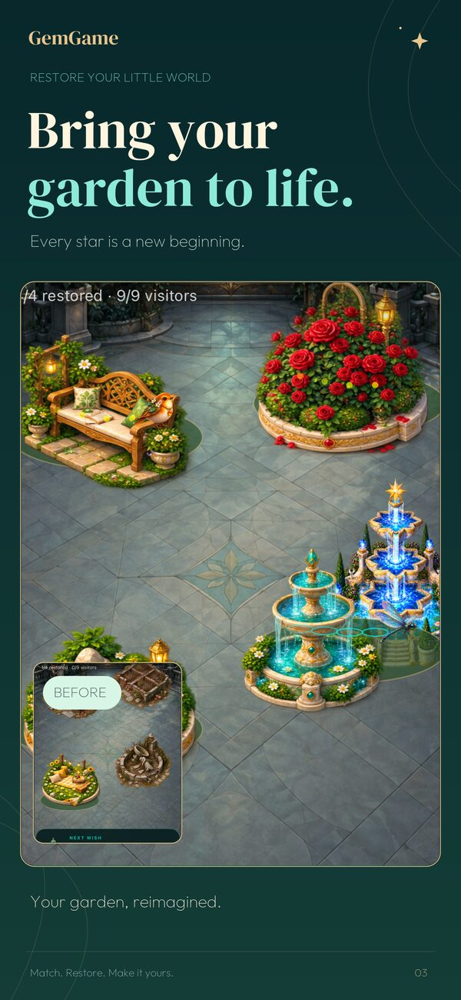

A little escape for iPhone
One clever match.
A garden coming to life.
Restore a fountain, make room for flowers and welcome a little woodland company. Your puzzle progress becomes something you can return to.
Free for iPhone · iOS 18 or later
Optional in-app purchases · English-language game
- No ads
- Offline core puzzles
- Restore a garden
Your matches become a place
Earn stars through campaign play and spend them restoring fountains, flowering corners and peaceful places to sit. Discover new districts and choose decorative finishes as your garden grows.

Five worlds to awaken
Travel from the Living Conservatory through the Nebula Waterways, Aurora Observatory and Plasma Forge to the Heart of the Void. Face guardians and make each world transformation permanent through campaign progress.
Return to choose free lighting, replay an awakening and pursue optional mastery. These places unfold through progress; the mature garden shown here is not your starting save.
A little company
Welcome butterflies, songbirds and other woodland visitors as you play. Restore a corner, look around and enjoy the change before your next puzzle.
What can I restore for free?
The base garden remains free, and restoration uses earned stars. Some decorative finishes require premium access. Optional purchases are explained in the game; you do not need to buy the Complete Collection to begin growing your garden.
Read the purchase and progress FAQ →Your next clever move
Make room for a little magic.
Free for iPhone · iOS 18 or later
Optional in-app purchases · English-language game
Campaign lives refill over time. Daily Star costs no lives. Purchases and Game Center need an internet connection.